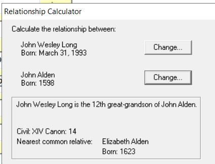
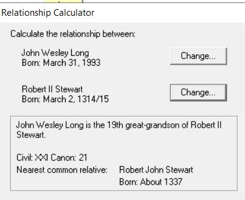
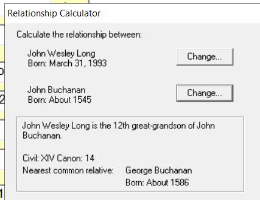
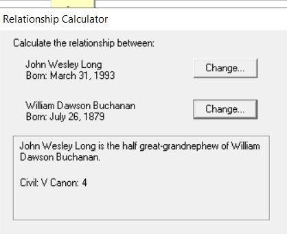

Cast of characters
A guide to the people who appear in eighteen years of letters
Born January 15, 1936, in Unicoi County, Tennessee. Mechanical engineer, AT trail maintainer, car restorer, community band musician, and for eighteen years, the faithful chronicler of family life. He wrote his last Sunday letter on May 3, 2026, ten days before he passed. He was 90.
Born March 12, 1936, in Lancaster, Pennsylvania. She and Pappy were classmates and married in 1955. Mother of six, fiercely independent. He called her GSH — Gracious Serving Helper — a joke drawn from a Baptist sermon that amused him precisely because it so perfectly didn't fit. She passed in May 2023. He wrote the following Sunday anyway.
Pappy was a dedicated genealogist who spent decades researching and documenting the family's history. His archive contains census records, marriage bonds, military documents, oral history recordings, and hundreds of historical photographs stretching back to the 1700s. He didn't just collect data — he interviewed elderly relatives in person, recorded their memories on tape, and corresponded with researchers across the country to piece together a complete picture.
On the Buchanan side, the line traces back to James Buchanan, born June 1734 in Maryland, who moved to the mountains of western North Carolina. His descendants put down roots in the Appalachian highlands — the same ridgelines Pappy walked on the Trail every Tuesday for decades.
Through Patricia's Showers line, the family connects to the Mayflower. Pappy documented that John Wesley Long (born March 31, 1993) is the 12th great-grandson of John Alden, who sailed on the Mayflower in 1620 and was among the founders of Plymouth Colony. The connection runs through Elizabeth Alden (b. 1623), John Alden's daughter.
Pappy also traced a line to Robert II Stewart (b. March 2, 1314/15), King of Scotland — making John Wesley Long his 19th great-grandson.

12th great-grandson of John Alden (b. 1598), Mayflower passenger

19th great-grandson of Robert II Stewart (b. 1314), King of Scotland

12th great-grandson of John Buchanan (b. ~1545)

Half great-grandnephew of William Dawson Buchanan (b. 1879)
These relationship calculations were documented by Pappy using genealogy software and shared with John Wesley Long personally. A full interactive family tree will be added in a future update.